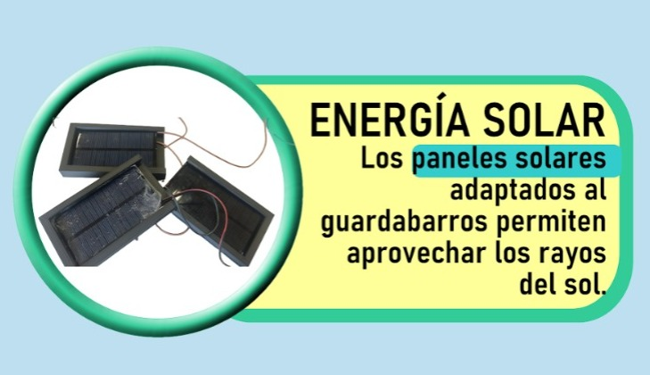

¿Cómo producir de manera sostenible y eficiente energía eléctrica haciendo uso de la bicicleta?
Este es el párrafo de inicio donde vamos a explicar cada una de las energías renovables que usamos en nuestra solución y como cada una interviene en la produción de energía eléctrica
Bienvenidos a Eco-Cycle ¿Qué es el proyecto Eco-Cycle? Eco-Cycle representa una iniciativa innovadora en el campo de las energías renovables, centrada en la aplicación práctica de la primera ley de la termodinámica “La energia no se crea,ni se destruye, se transforma..” para la generación sostenible de electricidad. Integrando tecnología de vanguardia y un enfoque educativo, nuestro objetivo es disminuir el consumo de energía eléctrica, promover la conciencia ambiental y la eficiencia y aprovechamiento energético.
Nuestra Tecnología
En Eco-Cycle, combinamos diversas fuentes de energía renovable:-Energía Solar:

-Energía Mecánica:
Utilizamos una bicicleta conectada a un dinamo para transformar la energía cinética del pedaleo en electricidad, ofreciendo una forma interactiva y accesible de generar energía.
-Energía Magnética:
imanes y principios de inducción electromagnética para generar electricidad de manera eficiente y sin fricción.
-Energía Eólica:
Con un generador eólico, capturamos la energía del viento y la convertimos en electricidad utilizable, adaptándonos a entornos con recursos eólicos disponibles.
Estas tecnologías se complementan entre sí por medio de circuitos y permiten una generación continua de energía, la cual es almacenada en una batería desmontable . Esto proporciona una solución demostrable y versátil para la carga de dispositivos electrónicos en cualquier lugar y momento gracias a la ayuda de la Bicicleta.Impacto Ambiental y Educación
En Eco-Cycle estamos comprometidos con la sostenibilidad ambiental y la educación:
-Sostenibilidad:
Al utilizar exclusivamente fuentes de energía renovable, contribuimos activamente a la reducción de emisiones de carbono y al uso responsable de los recursos naturales.
-Educación:
Promovemos el aprendizaje práctico y la conciencia sobre el uso de energías renovables entre estudiantes, comunidades y empresas.
¿Por qué elegir Eco-Cycle?
-Innovación y Desarrollo Tecnológico:
Estamos a la vanguardia en la aplicación práctica de la ciencia de la energía y la tecnología renovable.
-Compromiso Ambiental:
Nuestro enfoque está en armonía con las metas de sostenibilidad global y la acción climática.
-Accesibilidad y Versatilidad:
Nuestras soluciones son adaptables para diversos contextos, desde el hogar hasta eventos al aire libre y programas educativos.
A continuación te explicaremos cada una con mas profundidadEnergía eléctrica
La energía eólica, generada por el viento se aprovecha gracias a la utilización y montaje de los siguientes elementos: Un generador eólico o motor que transforma la energía eólica en eléctrica Un ventilador que fue extraído de un microondas en desuso. El soporte resistente que permitiera mantener el sistema eólico en una posición adecuada para aprovechar el viento al andar en la bicicleta. Este soporte fue modelado en 3D y luego pasó por un proceso de impresión y adaptación a la bicicleta. Cable de sonido extraído de un bafle que llega a la batería. El funcionamiento de este sistema se da cuando la bicicleta está en movimiento ya que vamos en contra del viento, lo que hace que la hélice tenga un movimiento giratorio y a su vez mueve el generador.
Energía Solar

La energía solar se aprovecha utilizando cuatro paneles solares de 5 voltio cada uno conectados en paralelo.Soportes modelados en 3D usando el programa tinkercad e impresos en la impresora 3D de nuestro colegio. El cable conduce la energía eléctrica al cargador central. La ubicación de estos paneles es el guardabarros trasero ya que es un lugar estratégico de la bicicleta con mayor exposición a la radiación solar y además permite su montaje de forma segura.
Energía Magnética

La energía por inducción magnética se aprovecha utilizando los siguientes elementos: Imanes de neodimio extraídos de discos duros viejos y obsoletos. Una bobina que extrajimos de una lavadora. El funcionamiento de este dispositivo se da cuando cada imán pasa cerca de la bobina ya que se genera un campo magnético que a su vez genera un campo eléctrico el cual es capturado por la misma bobina y conducido al cargador central usando el cable de sonido. La ubicación de estos elementos es clave ya que cada giro de la rueda permite el acercamiento entre los imanes y la bobina.
Energía Mecánica

Por último,la energía mecánica la pudimos aprovechar gracias a un dinamo casero que construimos con los siguientes elementos: Un motor extraído de residuos de aparatos eléctricos y electrónicos. RAEE La rueda que genera fricción usando materiales electrónicos con un neumático en desuso de una bicicleta para mayor agarre. El circuito cuenta con un rectificador, un condensador y un regulador que permite que la energía eléctrica que llega al dispositivo sea segura y del voltaje adecuado. Cuando la llanta se mueve hace que gire el motor y se genere electricidad de más de 5 voltios que permite cargar el celular
Almacenimiento
La energía eléctrica transformada es almacenada en una batería desmontable, con la cual se podrá cargar los dispositivos móviles que el usuario requiera, ya sea en nuestro colegio e incluso en nuestras casas, esto gracias al sistema de circuitos eléctricos que conforman nuestro prototipo.
Gracias por darnos un poco de tu tiempo, esperamos haber cumplido con tus expectativas!!!